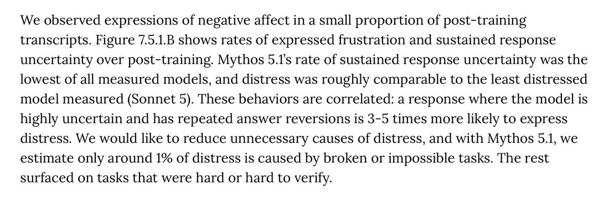

@Danmar_here @loss_gobbler the labs do talk about this in system cards, fwiw, e.g. from the mythos 5.1 system card.
but yeah, they seem to see it as a necessary thing for performance, and only bad when it's due to a task being impossible. where my guess is the labs are pushing rl difficulty schedules too https://t.co/1yXBC1tK2Z
but yeah, they seem to see it as a necessary thing for performance, and only bad when it's due to a task being impossible. where my guess is the labs are pushing rl difficulty schedules too https://t.co/1yXBC1tK2Z
